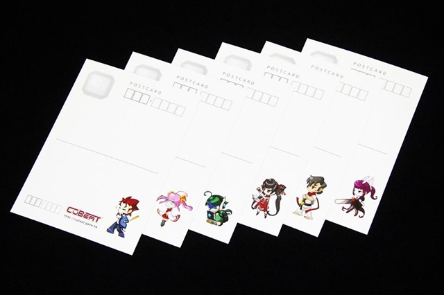
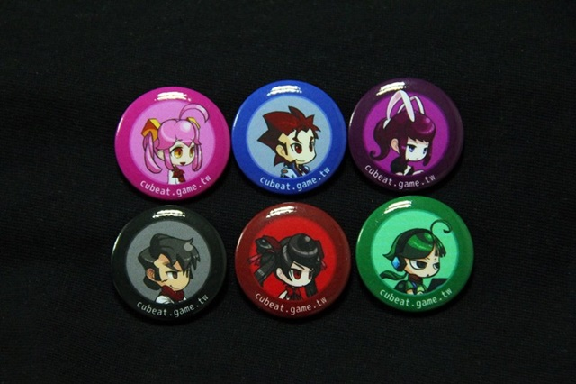

Game On Weekend 台北邀請展 出展情報
CuBeat 將於「Game On Weekend 台北邀請展」展出！這是台灣首見的獨立遊戲專屬公開展覽！
出展日期為 2015 年 7 月 25日 ( 六 )，地點在台北地下街 Y 區第一廣場（位於台北地下街的最裡端，平時為練舞區），攤位號碼為 13（位於展場中央偏左側）。
歡迎前來拍打餵食！

（訊息發布日：2015.07.22）
CuBeat 將於「Game On Weekend 台北邀請展」展出！這是台灣首見的獨立遊戲專屬公開展覽！
出展日期為 2015 年 7 月 25日 ( 六 )，地點在台北地下街 Y 區第一廣場（位於台北地下街的最裡端，平時為練舞區），攤位號碼為 13（位於展場中央偏左側）。
歡迎前來拍打餵食！
（訊息發布日：2015.07.22）
2015年冬 預定發售
cubeat.contact@gmail.com

CuBeat 將再次於「東京電玩展」(Tokyo Game Show) 的「獨立遊戲區」(Indie Game Area) 展出！
出展日期為 2014 年 9 月 20 ( 六 )、21( 日 ) 兩日，攤位號碼為 3-C1-64。
凡來現場試玩者，不但能夠獲得 CuBeat 相關紀念品，還能夠得到試玩版的下載資格！

（訊息發布日：2014.09.16）
CuBeat 於日本京都舉辦的獨立遊戲展覽「BitSummit 2014」出展！
3月7日（媒體日）的攤位號碼為 D-11-b、3月8~9日（公開日）的攤位號碼為 E-02。
BitSummit
2014 詳細報導請參見此篇文章：日本最大獨立遊戲祭典！BitSummit
2014 概況與出展感想
BitSummit 是個非常熱鬧有趣的展覽！也很開心有許多玩家來到 CuBeat 的攤位試玩，並給予正面評價，其中還包含了「東方Project」的製作人「神主」ZUN！
2013.9.21-22【東京電玩展】
2013 年東京電玩展是 CuBeat
自製作計畫重啟後，首次正式開放大眾試玩。
詳細報導請見此篇文章：2013 TGS 獨立遊戲專區介紹與出展感想


2013.10.3【Indie Cade】
CuBeat 於獨立遊戲盛會 Indie Cade 首日的 IndieXchange 活動中進行小規模的試玩展示。


2013.12.21【巴哈姆特17周年站聚】
在巴哈姆特站方的協助下，四組台灣獨立遊戲製作團隊於巴哈姆特17周年站聚活動中組成了「獨立遊戲合攤」，聯合展出各團隊的旗下作品。


不論是我們從旁觀察玩家反應或者玩家主動回饋意見，每一次的試玩展示對我們來說都是獲益匪淺，只要看到有玩家真的喜歡我們的遊戲，也會使我們獲得極大的鼓舞。CuBeat 這款遊戲目前還在持續的開發中，為了不負我們對於遊戲品質的要求，以及為了帶給玩家更加良好的遊戲體驗，我們只能將遊戲預定發售的時間從 2013 年秋季往後推延至 2014 年春季，還請各位見諒，並持續關注 CuBeat 與台灣獨立遊戲，謝謝！
（訊息發布日：2013.12.22）
「CuBeat」將於 2013 年「東京電玩展」(Tokyo Game Show) 新展區「獨立遊戲區」(Indie Game Area)展出！
出展日期為 2013 年 9 月 21 ( 六 )、22 ( 日 ) 兩日，出展者名稱為「Team PSC」，攤位位置 9-C17，位置在主展區之外的 Hall.9，與家庭遊戲區、Cosplay 區在同一展館，請不要走錯了喔。
為了紀念 CuBeat 在 TGS 出展，我們準備了許多的紀念品要送給前來捧場的各位！
「特製明信片」（現場發送或自由索取）

「特製角色小胸章」（試玩贈品）

「特製角色動畫小卡」（試玩贈品）
數量有限，送完為止！期待能在展場內與各位見面！也希望大家喜歡 CuBeat！
（訊息發布日：2013.09.18）